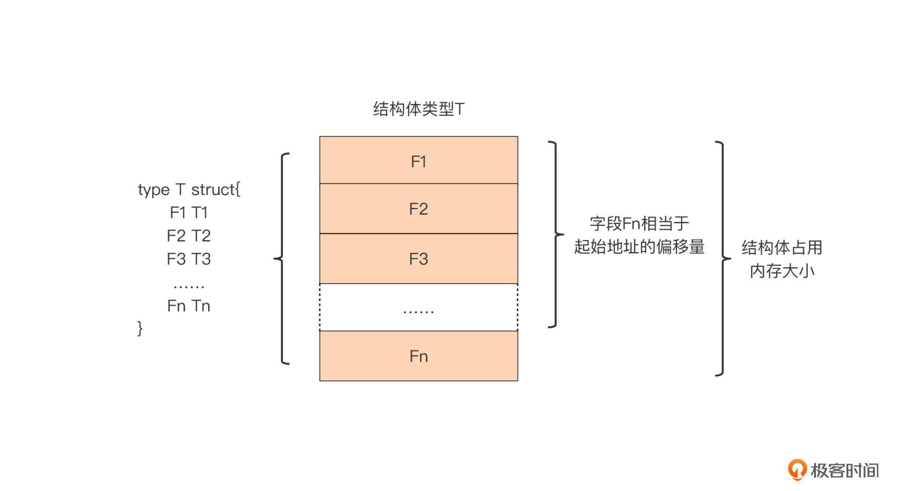
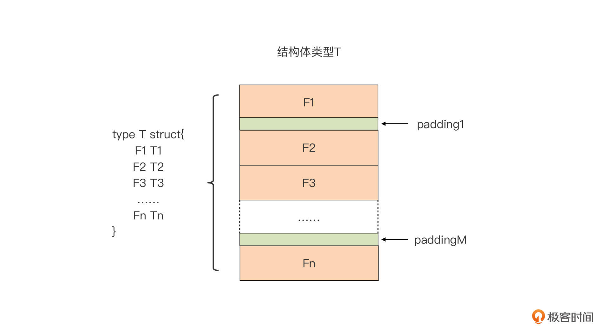
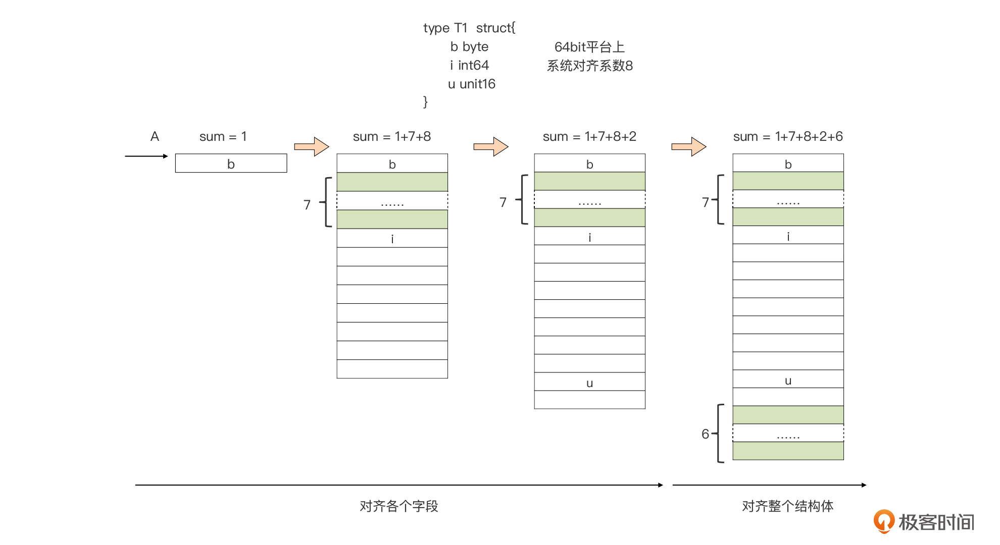

结构体
结构体定义
复合类型的定义一般都是通过类型字面值的方式来进行的，作为复合类型之一的结构体类型也不例外，结构体类型表示的是实实在在的数据结构。一个结构体类型可以包含若干个字段，每个字段通常都需要有确切的名字和类型，下面就是一个典型的结构体类型的定义形式：
type T struct {
Field1 T1
Field2 T2
... ...
FieldN Tn
}
根据这个定义，我们会得到一个名为T的结构体类型，定义中struct关键字后面的大括号包裹的内容就是一个 类型字面值。我们看到这个类型字面值由若干个字段（field）聚合而成，每个字段有自己的名字与类型，并且在一个结构体中，每个字段的名字应该都是唯一的。
通过聚合其他类型字段，结构体类型展现出强大而灵活的抽象能力。我们直接上案例实操，来说明一下。
我们前面提到过对现实世界的动物进行抽象的情况，其实用结构体类型就可以实现，比如这里，我就用前面的典型方法定义了一个结构体：
type AnimalCategory struct {
kingdom string // 界。
phylum string // 门。
class string // 纲。
order string // 目。
family string // 科。
genus string // 属。
species string // 种。
}
func (ac AnimalCategory) String() string {
return fmt.Sprintf("%s%s%s%s%s%s%s",
ac.kingdom, ac.phylum, ac.class, ac.order,
ac.family, ac.genus, ac.species)
}
结构体类型 AnimalCategory 代表了动物的基本分类法，其中有7个 string 类型的字段，分别表示各个等级的分类。
下边有个名叫 String 的方法，从它的接收者声明可以看出它隶属于 AnimalCategory 类型。
通过该方法的接收者名称 ac，我们可以在其中引用到当前值的任何一个字段，或者调用到当前值的任何一个方法（也包括 String 方法自己）。
这个 String 方法的功能是提供当前值的字符串表示形式，其中的各个等级分类会按照从大到小的顺序排列。使用时，我们可以这样表示：
category := AnimalCategory{species: "cat"}
fmt.Printf("The animal category: %s\\n", category)
这里，我用字面量初始化了一个 AnimalCategory 类型的值，并把它赋给了变量 category。为了不喧宾夺主，我只为其中的 species 字段指定了字符串值 "cat"，该字段代表最末级分类“种”。
在Go语言中，我们可以通过为一个类型编写名为 String 的方法，来自定义该类型的字符串表示形式。这个 String 方法不需要任何参数声明，但需要有一个 string 类型的结果声明。
正因为如此，我在调用 fmt.Printf 函数时，使用占位符 %s 和 category 值本身就可以打印出后者的字符串表示形式，而无需显式地调用它的 String 方法。
fmt.Printf 函数会自己去寻找它。此时的打印内容会是 The animal category: cat。显而易见， category 的 String 方法成功地引用了当前值的所有字段。
方法隶属的类型其实并不局限于结构体类型，但必须是某个自定义的数据类型，并且不能是任何接口类型。
一个数据类型关联的所有方法，共同组成了该类型的方法集合。同一个方法集合中的方法不能出现重名。并且，如果它们所属的是一个结构体类型，那么它们的名称与该类型中任何字段的名称也不能重复。
我们可以把结构体类型中的一个字段看作是它的一个属性或者一项数据，再把隶属于它的一个方法看作是附加在其中数据之上的一个能力或者一项操作。将属性及其能力（或者说数据及其操作）封装在一起，是面向对象编程（object-oriented programming）的一个主要原则。
type Book struct {
Title string // 书名
Pages int // 书的页数
Indexes map[string]int // 书的索引
}
在这个结构体定义中，你会发现，我在类型Book，还有它的各个字段中都用了首字母大写的名字。Go用标识符名称的首字母大小写来判定这个标识符是否为导出标识符。所以，这里的类型Book以及它的各个字段都是导出标识符。这样，只要其他包导入了包book，我们就可以在这些包中直接引用类型名Book，也可以通过Book类型变量引用Name、Pages等字段，就像下面代码中这样：
import ".../book"
var b book.Book
b.Title = "The Go Programming Language"
b.Pages = 800
如果结构体类型只在它定义的包内使用，那么我们可以将类型名的首字母小写；如果你不想将结构体类型中的某个字段暴露给其他包，那么我们同样可以把这个字段名字的首字母小写。
我们还可以用 空标识符“_”作为结构体类型定义中的字段名称。这样以空标识符为名称的字段，不能被外部包引用，甚至无法被结构体所在的包使用。那这么做有什么实际意义呢？这里先留个悬念，你可以自己先思考一下，我们在后面讲解结构体类型的内存布局时，会揭晓答案。
除了通过类型字面值来定义结构体这种典型操作外，我们还有另外几种特殊的情况。
定义结构体的几种特殊情况
第一种：定义一个空结构体。
我们可以定义一个空结构体，也就是没有包含任何字段的结构体类型，就像下面示例代码这样：
type Empty struct{} // Empty是一个不包含任何字段的空结构体类型
空结构体类型有什么用呢？我们继续看下面代码：
var s Empty
println(unsafe.Sizeof(s)) // 0
我们看到，输出的空结构体类型变量的大小为0，也就是说，空结构体类型变量的内存占用为0。基于空结构体类型内存零开销这样的特性，我们在日常Go开发中会经常使用空结构体类型元素，作为一种“事件”信息进行Goroutine之间的通信，就像下面示例代码这样：
var c = make(chan Empty) // 声明一个元素类型为Empty的channel
c<-Empty{} // 向channel写入一个“事件”
这种以空结构体为元素类建立的channel，是目前能实现的、内存占用最小的Goroutine间通信方式。
第二种情况：使用其他结构体作为自定义结构体中字段的类型。
我们看这段代码，这里结构体类型Book的字段Author的类型，就是另外一个结构体类型Person：
type Person struct {
Name string
Phone string
Addr string
}
type Book struct {
Title string
Author Person
... ...
}
如果我们要访问Book结构体字段Author中的Phone字段，我们可以这样操作：
var book Book
println(book.Author.Phone)
嵌入字段(匿名字段)
对于包含结构体类型字段的结构体类型来说，Go还提供了一种更为简便的定义方法， 那就是我们可以无需提供字段的名字，只需要使用其类型就可以了，以上面的Book结构体定义为例，我们可以用下面的方式提供一个等价的定义：
type Book struct {
Title string
Person
... ...
}
以这种方式定义的结构体字段，我们叫做 嵌入字段（Embedded Field）。
Go语言规范规定，如果一个字段的声明中只有字段的类型名而没有字段的名称，那么它就是一个嵌入字段，也可以被称为匿名字段。我们可以通过此类型变量的名称后跟“.”，再后跟嵌入字段类型的方式引用到该字段。也就是说，嵌入字段的类型既是类型也是名称。
我们也可以将这种字段称为匿名字段，或者把类型名看作是这个字段的名字。如果我们要访问Person中的Phone字段，我们可以通过下面两种方式进行：
var book Book
println(book.Person.Phone) // 将类型名当作嵌入字段的名字
println(book.Phone) // 支持直接访问嵌入字段所属类型中字段
第一种方式显然是通过把类型名当作嵌入字段的名字来进行操作的，而第二种方式更像是一种“语法糖”，我们可以“绕过”Person类型这一层，直接访问Person中的字段。
不过，看到这里，关于结构体定义，你可能还有一个疑问， 在结构体类型T的定义中是否可以包含类型为T的字段呢？ 比如这样：
type T struct {
t T
... ...
}
答案是不可以的。Go语言不支持这种在结构体类型定义中，递归地放入其自身类型字段的定义方式。面对上面的示例代码，编译器就会给出“invalid recursive type T”的错误信息。 同样，下面这两个结构体类型T1与T2的定义也存在递归的情况，所以这也是不合法的。
type T1 struct {
t2 T2
}
type T2 struct {
t1 T1
}
不过，虽然我们不能在结构体类型T定义中，拥有以自身类型T定义的字段，但我们却可以拥有自身类型的指针类型、以自身类型为元素类型的切片类型，以及以自身类型作为value类型的map类型的字段，比如这样：
type T struct {
t *T // ok
st []T // ok
m map[string]T // ok
}
结构体变量的声明与初始化
和其他所有变量的声明一样，我们也可以使用标准变量声明语句，或者是短变量声明语句声明一个结构体类型的变量：
type Book struct {
...
}
var book Book
var book = Book{}
book := Book{}
不过，这里要注意，我们在前面说过，结构体类型通常是对真实世界复杂事物的抽象，这和简单的数值、字符串、数组/切片等类型有所不同， 结构体类型的变量通常都要被赋予适当的初始值后，才会有合理的意义。
接下来，我把结构体类型变量的初始化大致分为三种情况，我们逐一看一下。
零值初始化
零值初始化说的是使用结构体的零值作为它的初始值。在前面的课程中，“零值”这个术语反复出现过多次，它指的是一个类型的默认值。对于Go原生类型来说，这个默认值也称为零值。Go结构体类型由若干个字段组成，当这个结构体类型变量的各个字段的值都是零值时，我们就说这个结构体类型变量处于零值状态。
前面提到过，结构体类型的零值变量，通常不具有或者很难具有合理的意义，比如通过下面代码得到的零值book变量就是这样：
var book Book // book为零值结构体变量
你想象一下，一本书既没有书名，也没有作者、页数、索引等信息，那么通过Book类型对这本书的抽象就失去了实际价值。所以对于像Book这样的结构体类型，使用零值初始化并不是正确的选择。
那么采用零值初始化的零值结构体变量就真的没有任何价值了吗？恰恰相反。如果一种类型采用零值初始化得到的零值变量，是有意义的，而且是直接可用的，我称这种类型为 “零值可用”类型。可以说，定义零值可用类型是简化代码、改善开发者使用体验的一种重要的手段。
在Go语言标准库和运行时的代码中，有很多践行“零值可用”理念的好例子，最典型的莫过于sync包的Mutex类型了。Mutex是Go标准库中提供的、用于多个并发Goroutine之间进行同步的互斥锁。
运用“零值可用”类型，给Go语言中的线程互斥锁带来了什么好处呢？我们横向对比一下C语言中的做法你就知道了。如果我们要在C语言中使用线程互斥锁，我们通常需要这么做：
pthread_mutex_t mutex;
pthread_mutex_init(&mutex, NULL);
pthread_mutex_lock(&mutex);
... ...
pthread_mutex_unlock(&mutex);
我们可以看到，在C中使用互斥锁，我们需要首先声明一个mutex变量。但这个时候，我们不能直接使用声明过的变量，因为它的零值状态是不可用的，我们必须使用pthread_mutex_init函数对其进行专门的初始化操作后，它才能处于可用状态。再之后，我们才能进行lock与unlock操作。 但是在Go语言中，我们只需要这几行代码就可以了：
var mu sync.Mutex
mu.Lock()
mu.Unlock()
Go标准库的设计者很贴心地将sync.Mutex结构体的零值状态，设计为可用状态，这样开发者便可直接基于零值状态下的Mutex进行lock与unlock操作，而且不需要额外显式地对它进行初始化操作了。 Go标准库中的bytes.Buffer结构体类型，也是一个零值可用类型的典型例子，这里我演示了bytes.Buffer类型的常规用法：
var b bytes.Buffer
b.Write([]byte("Hello, Go"))
fmt.Println(b.String()) // 输出：Hello, Go
你可以看到，我们不需要对bytes.Buffer类型的变量b进行任何显式初始化，就可以直接通过处于零值状态的变量b，调用它的方法进行写入和读取操作。
不过有些类型确实不能设计为零值可用类型，就比如我们前面的Book类型，它们的零值并非有效值。对于这类类型，我们需要对它的变量进行显式的初始化后，才能正确使用。在日常开发中，对结构体类型变量进行显式初始化的最常用方法就是使用复合字面值，下面我们就来看看这种方法。
使用复合字面值
其实我们已经不是第一次接触复合字面值了，之前我们讲解数组/切片、map类型变量的变量初始化的时候，都提到过用复合字面值的方法。
最简单的对结构体变量进行显式初始化的方式，就是 按顺序依次给每个结构体字段进行赋值，比如下面的代码：
type Book struct {
Title string // 书名
Pages int // 书的页数
Indexes map[string]int // 书的索引
}
var book = Book{"The Go Programming Language", 700, make(map[string]int)}
我们依然可以用这种方法给结构体的每一个字段依次赋值，但这种方法也有很多问题： 首先，当结构体类型定义中的字段顺序发生变化，或者字段出现增删操作时，我们就需要手动调整该结构体类型变量的显式初始化代码，让赋值顺序与调整后的字段顺序一致。 其次，当一个结构体的字段较多时，这种逐一字段赋值的方式实施起来就会比较困难，而且容易出错，开发人员需要来回对照结构体类型中字段的类型与顺序，谨慎编写字面值表达式。 最后，一旦结构体中包含非导出字段，那么这种逐一字段赋值的方式就不再被支持了，编译器会报错：
type T struct {
F1 int
F2 string
f3 int
F4 int
F5 int
}
var t = T{11, "hello", 13} // 错误：implicit assignment of unexported field 'f3' in T literal
或
var t = T{11, "hello", 13, 14, 15} // 错误：implicit assignment of unexported field 'f3' in T literal
事实上，Go语言并不推荐我们按字段顺序对一个结构体类型变量进行显式初始化，甚至Go官方还在提供的go vet工具中专门内置了一条检查规则： “composites”，用来静态检查代码中结构体变量初始化是否使用了这种方法，一旦发现，就会给出警告。
那么我们应该用哪种形式的复合字面值给结构体变量赋初值呢？
Go推荐我们用 “field:value”形式的复合字面值，对结构体类型变量进行显式初始化，这种方式可以降低结构体类型使用者和结构体类型设计者之间的耦合，这也是Go语言的惯用法。这里，我们用“field:value”形式复合字面值，对上面的类型T的变量进行初始化看看：
var t = T{
F2: "hello",
F1: 11,
F4: 14,
}
我们看到，使用这种“field:value”形式的复合字面值对结构体类型变量进行初始化，非常灵活。和之前的顺序复合字面值形式相比，“field:value”形式字面值中的字段可以以任意次序出现。未显式出现在字面值中的结构体字段（比如上面例子中的F5）将采用它对应类型的零值。 复合字面值作为结构体类型变量初值被广泛使用，即便结构体采用类型零值时，我们也会使用复合字面值的形式：
t := T{}
而比较少使用new这一个Go预定义的函数来创建结构体变量实例：
tp := new(T)
这里值得我们注意的是，我们不能用从其他包导入的结构体中的未导出字段，来作为复合字面值中的field。这会导致编译错误，因为未导出字段是不可见的。
那么，如果一个结构体类型中包含未导出字段，并且这个字段的零值还不可用时，我们要如何初始化这个结构体类型的变量呢？又或是一个结构体类型中的某些字段，需要一个复杂的初始化逻辑，我们又该怎么做呢？这时我们就需要使用一个特定的构造函数，来创建并初始化结构体变量了。
使用特定的构造函数
其实，使用特定的构造函数创建并初始化结构体变量的例子，并不罕见。在Go标准库中就有很多，其中time.Timer这个结构体就是一个典型的例子，它的定义如下：
// $GOROOT/src/time/sleep.go
type runtimeTimer struct {
pp uintptr
when int64
period int64
f func(interface{}, uintptr)
arg interface{}
seq uintptr
nextwhen int64
status uint32
}
type Timer struct {
C <-chan Time
r runtimeTimer
}
我们看到，Timer结构体中包含了一个非导出字段r，r的类型为另外一个结构体类型runtimeTimer。这个结构体更为复杂，而且我们一眼就可以看出来，这个runtimeTimer结构体不是零值可用的，那我们在创建一个Timer类型变量时就没法使用显式复合字面值的方式了。这个时候，Go标准库提供了一个Timer结构体专用的构造函数NewTimer，它的实现如下：
// $GOROOT/src/time/sleep.go
func NewTimer(d Duration) *Timer {
c := make(chan Time, 1)
t := &Timer{
C: c,
r: runtimeTimer{
when: when(d),
f: sendTime,
arg: c,
},
}
startTimer(&t.r)
return t
}
我们看到，NewTimer这个函数只接受一个表示定时时间的参数d，在经过一个复杂的初始化过程后，它返回了一个处于可用状态的Timer类型指针实例。 像这类通过专用构造函数进行结构体类型变量创建、初始化的例子还有很多，我们可以总结一下，它们的专用构造函数大多都符合这种模式：
func NewT(field1, field2, ...) *T {
... ...
}
这里，NewT是结构体类型T的专用构造函数，它的参数列表中的参数通常与T定义中的导出字段相对应，返回值则是一个T指针类型的变量。T的非导出字段在NewT内部进行初始化，一些需要复杂初始化逻辑的字段也会在NewT内部完成初始化。这样，我们只要调用NewT函数就可以得到一个可用的T指针类型变量了。
和之前学习复合数据类型的套路一样，接下来，我们再回到结构体类型的定义，看看结构体类型在内存中的表示，也就是内存布局。
结构体类型的内存布局
Go结构体类型是继数组类型之后，第二个将它的元素（结构体字段）一个接着一个以“平铺”形式，存放在一个连续内存块中的。下图是一个结构体类型T的内存布局：

我们看到，结构体类型T在内存中布局是非常紧凑的，Go为它分配的内存都用来存储字段了，没有被Go编译器插入的额外字段。我们可以借助标准库unsafe包提供的函数，获得结构体类型变量占用的内存大小，以及它每个字段在内存中相对于结构体变量起始地址的偏移量：
var t T
unsafe.Sizeof(t) // 结构体类型变量占用的内存大小
unsafe.Offsetof(t.Fn) // 字段Fn在内存中相对于变量t起始地址的偏移量
不过，上面这张示意图是比较理想的状态，真实的情况可能就没那么好了：

在真实情况下，虽然Go编译器没有在结构体变量占用的内存空间中插入额外字段，但结构体字段实际上可能并不是紧密相连的，中间可能存在“缝隙”。这些“缝隙”同样是结构体变量占用的内存空间的一部分，它们是Go编译器插入的“填充物（Padding）”。
那么，Go编译器为什么要在结构体的字段间插入“填充物”呢？这其实是 内存对齐 的要求。所谓内存对齐，指的就是各种内存对象的内存地址不是随意确定的，必须满足特定要求。
对于各种基本数据类型来说，它的变量的内存地址值必须是其类型本身大小的整数倍，比如，一个int64类型的变量的内存地址，应该能被int64类型自身的大小，也就是8整除；一个uint16类型的变量的内存地址，应该能被uint16类型自身的大小，也就是2整除。
这些基本数据类型的对齐要求很好理解，那么像结构体类型这样的复合数据类型，内存对齐又是怎么要求的呢？是不是它的内存地址也必须是它类型大小的整数倍呢？
实际上没有这么严格。对于结构体而言，它的变量的内存地址，只要是它最长字段长度与系统对齐系数两者之间较小的那个的整数倍就可以了。但对于结构体类型来说，我们还要让它每个字段的内存地址都严格满足内存对齐要求。
这么说依然比较绕，我们来看一个具体例子，计算一下这个结构体类型T的对齐系数：
type T struct {
b byte
i int64
u uint16
}
计算过程是这样的：

我们简单分析一下，整个计算过程分为两个阶段。 第一个阶段是对齐结构体的各个字段。
首先，我们看第一个字段b是长度1个字节的byte类型变量，这样字段b放在任意地址上都可以被1整除，所以我们说它是天生对齐的。我们用一个sum来表示当前已经对齐的内存空间的大小，这个时候sum=1；
接下来，我们看第二个字段i，它是一个长度为8个字节的int64类型变量。按照内存对齐要求，它应该被放在可以被8整除的地址上。但是，如果把i紧邻b进行分配，当i的地址可以被8整除时，b的地址就无法被8整除。这个时候，我们需要在b与i之间做一些填充，使得i的地址可以被8整除时，b的地址也始终可以被8整除，于是我们在i与b之间填充了7个字节，此时此刻sum=1+7+8；
再下来，我们看第三个字段u，它是一个长度为2个字节的uint16类型变量，按照内存对其要求，它应该被放在可以被2整除的地址上。有了对其的i作为基础，我们现在知道将u与i相邻而放，是可以满足其地址的对齐要求的。i之后的那个字节的地址肯定可以被8整除，也一定可以被2整除。于是我们把u直接放在i的后面，中间不需要填充，此时此刻，sum=1+7+8+2。
现在结构体T的所有字段都已经对齐了，我们开始第二个阶段，也就是对齐整个结构体。
我们前面提到过，结构体的内存地址为min（结构体最长字段的长度，系统内存对齐系数）的整数倍，那么这里结构体T最长字段为i，它的长度为8，而64bit系统上的系统内存对齐系数一般为8，两者相同，我们取8就可以了。那么整个结构体的对齐系数就是8。
这个时候问题就来了！为什么上面的示意图还要在结构体的尾部填充了6个字节呢？
我们说过结构体T的对齐系数是8，那么我们就要保证每个结构体T的变量的内存地址，都能被8整除。如果我们只分配一个T类型变量，不再继续填充，也可能保证其内存地址为8的倍数。但如果考虑我们分配的是一个元素为T类型的数组，比如下面这行代码，我们虽然可以保证T[0]这个元素地址可以被8整除，但能保证T[1]的地址也可以被8整除吗？
var array [10]T
我们知道，数组是元素连续存储的一种类型，元素T[1]的地址为T[0]地址+T的大小(18)，显然无法被8整除，这将导致T[1]及后续元素的地址都无法对齐，这显然不能满足内存对齐的要求。 问题的根源在哪里呢？问题就在于T的当前大小为18，这是一个不能被8整除的数值，如果T的大小可以被8整除，那问题就解决了。于是我们才有了最后一个步骤，我们从18开始向后找到第一个可以被8整除的数字，也就是将18圆整到8的倍数上，我们得到24，我们将24作为类型T最终的大小就可以了。 为什么会出现内存对齐的要求呢？这是出于对处理器存取数据效率的考虑。在早期的一些处理器中，比如Sun公司的Sparc处理器仅支持内存对齐的地址，如果它遇到没有对齐的内存地址，会引发段错误，导致程序崩溃。我们常见的x86-64架构处理器虽然处理未对齐的内存地址不会出现段错误，但数据的存取性能也会受到影响。 从这个推演过程中，你应该已经知道了，Go语言中结构体类型的大小受内存对齐约束的影响。这样一来，不同的字段排列顺序也会影响到“填充字节”的多少，从而影响到整个结构体大小。比如下面两个结构体类型表示的抽象是相同的，但正是因为字段排列顺序不同，导致它们的大小也不同：
type T struct {
b byte
i int64
u uint16
}
type S struct {
b byte
u uint16
i int64
}
func main() {
var t T
println(unsafe.Sizeof(t)) // 24
var s S
println(unsafe.Sizeof(s)) // 16
}
所以，你在日常定义结构体时，一定要注意结构体中字段顺序，尽量合理排序，降低结构体对内存空间的占用。 另外，前面例子中的内存填充部分，是由编译器自动完成的。不过，有些时候，为了保证某个字段的内存地址有更为严格的约束，我们也会做主动填充。比如runtime包中的mstats结构体定义就采用了主动填充：
// $GOROOT/src/runtime/mstats.go
type mstats struct {
... ...
// Add an uint32 for even number of size classes to align below fields
// to 64 bits for atomic operations on 32 bit platforms.
_ [1 - _NumSizeClasses%2]uint32 // 这里做了主动填充
last_gc_nanotime uint64 // last gc (monotonic time)
last_heap_inuse uint64 // heap_inuse at mark termination of the previous GC
... ...
}